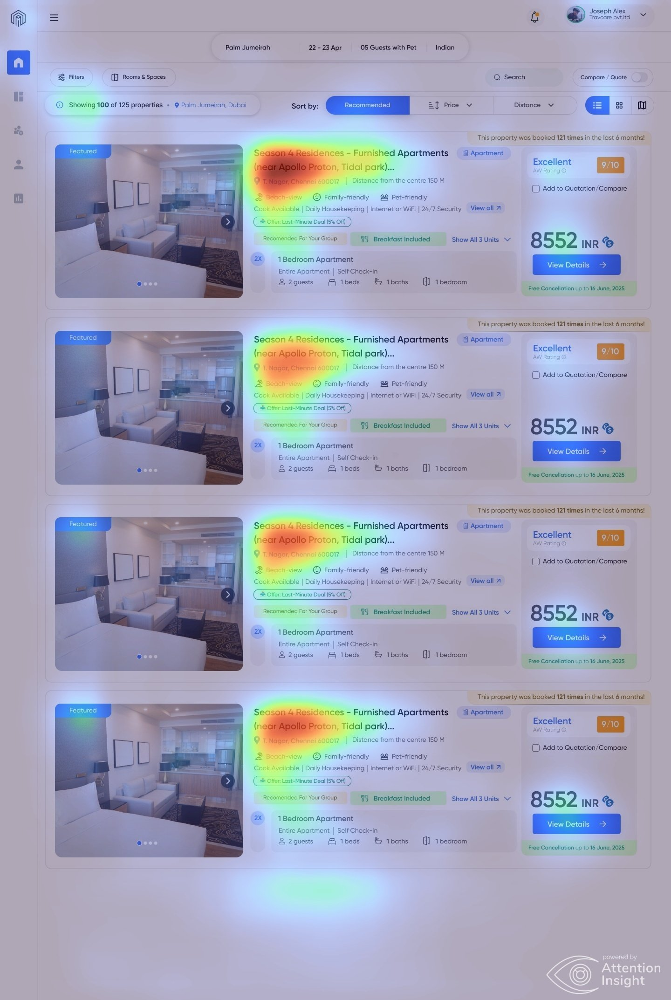
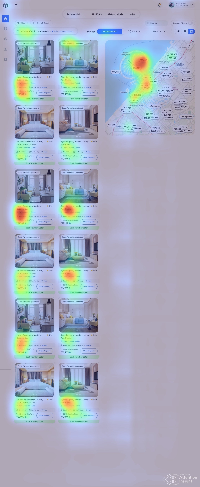
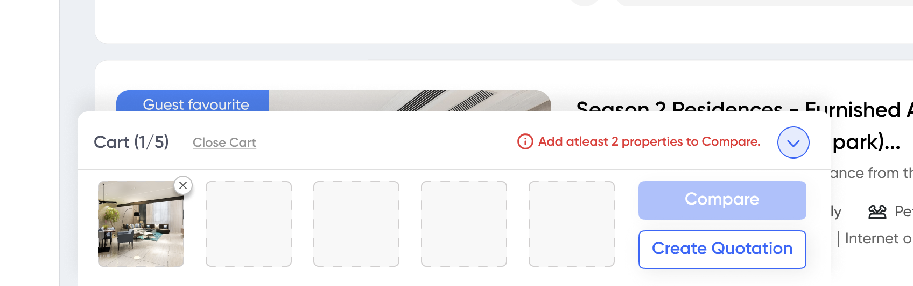
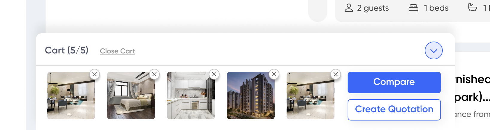
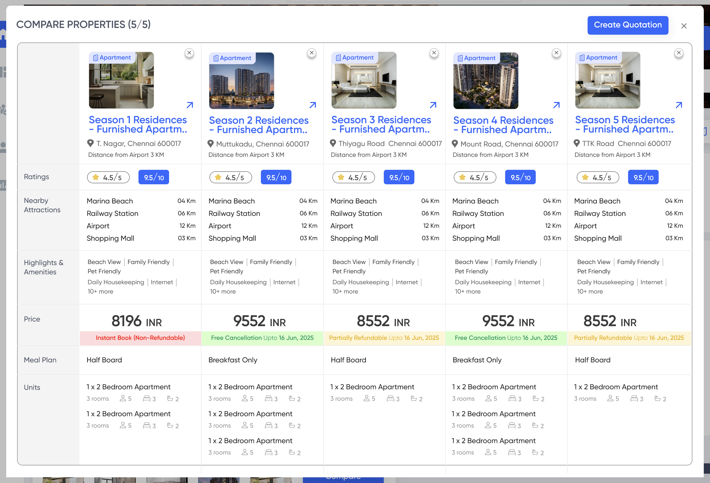
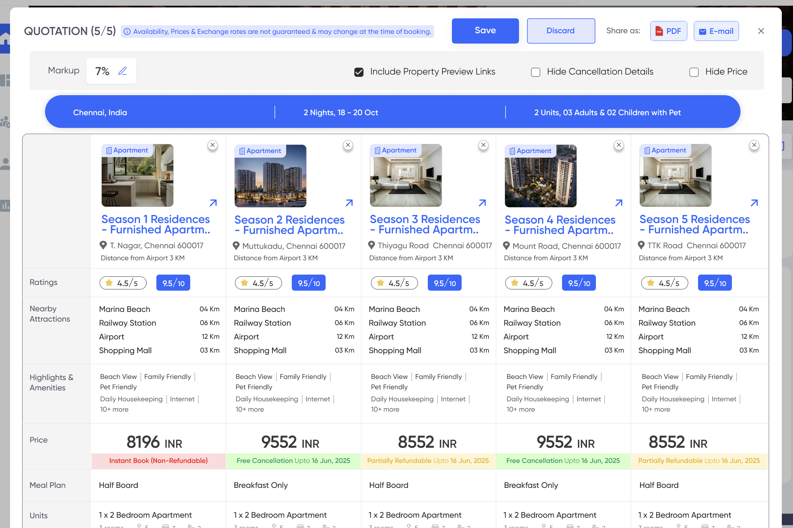

Study 4 of 4
Evaluating decision-support workflows
Usability testing the compare and quotation experience — validating what worked, surfacing what didn't, and identifying where the design was quietly asking users to do its job
Why this study was needed
By the time the compare and quotation flow reached prototype stage, it carried a significant amount of accumulated research logic. The toggle mechanism — a single switch activating the ability to add properties to a cart-like selection tray — was deliberate. So was the decision to unify compare and quotation creation into a single journey rather than treating them as separate flows. These weren't arbitrary choices. They came directly from the behavioral research finding that agents optimized for speed and operated across multiple client requests simultaneously.
But research rationale and usability are different problems. A flow can be logically sound and still fail under real working conditions. Three questions were still open going into testing:
- —Would agents find the toggle without instruction?
- —Would the thumbnail cart read as interactive and purposeful?
- —Would the Compare → Create Quotation transition feel like one continuous action or two separate decisions?
"The question wasn't whether the flow would work in theory. It was whether it would work for someone who hadn't designed it — someone moving fast, with a client waiting."
Research questions
- 1Is the toggle discoverable without instruction, and does its function read clearly?
- 2Do agents understand the cart tray — what it holds, what thumbnails represent, how to interact?
- 3Does the Compare → Create Quotation transition feel like one continuous action or two separate tasks?
- 4Where does attention fall naturally on the search results page — does it match intended hierarchy?
- 5Which elements create hesitation, and which are navigated without friction?
Approach
Three methods in sequence — each addressing a different kind of question, and each informing what to watch for in the next.
Generated before any user touched the prototype. Used to predict where visual attention would land on the search results page — specifically to check whether the toggle was receiving enough natural draw relative to surrounding content.
A low-stakes first pass: structured enough to surface confusion points, informal enough to generate honest reactions. Two colleagues walked through the full flow unprompted, narrating as they went.
Participants asked to complete tasks on a mid-fidelity Figma prototype using a think-aloud protocol. Sessions run remotely via Teams. Task performance, hesitation points, and verbal reasoning captured and analyzed.
Task performance summary
4 participants · 3 core tasks · Think-aloud protocol · Mid-fidelity Figma prototype
100%
Task completion rate across all three tasks
2/4
Participants found the toggle without prompting on first attempt
0
Participants hesitated during the Compare → Quotation transition
Finding 1 · Toggle discoverability
The toggle was found — but not always first
The compare/quote toggle sits in the top-left of the search results interface. Before any user touched the prototype, Attention Insight heatmaps predicted that initial attention would cluster around property images, property names, and the price block on the right — not the toggle. This mapped directly onto the behavioral research finding that agents scan for location and price signals before anything else.
In internal walkthrough sessions, two colleagues tried to select properties directly — clicking on cards — before locating the toggle. In user testing with travel agents, the pattern repeated: all four found the toggle, but only two found it without first looking elsewhere. Once found, comprehension was immediate. No participant was confused about what the toggle did. The issue was purely discoverability — getting to it in the first place.
In a product designed for speed, the difference between "found it eventually" and "found it immediately" is significant. An agent managing multiple client requests simultaneously cannot afford extra orientation time on every search.

List view — heat lands on property images, names and the price / AW Rating block; the Compare / Quote toggle (top-right) draws little attention.

Grid + map view — the same pattern: imagery and price pull the eye first; the toggle sits outside the natural scan path.
Assumed selection would work directly on the card — the toggle's role as an activation mechanism wasn't immediately apparent
Less experienced participants took longer; those with existing platform familiarity moved faster
Comprehension was not the problem. Passive discoverability was.
Key insight
The toggle works as a mechanism. But it relies on users actively looking for it — a risky assumption in a fast-moving B2B context. A visual state change or attention anchor triggered on search completion would reduce reliance on active discovery.
Finding 2 · Cart tray interaction
The highest-risk decision performed better than expected
The thumbnail tray at the bottom of the screen was the design decision I was most uncertain about going into testing. A persistent, cart-style row of small property images — each revealing the property name on hover — felt like it could easily read as decorative rather than functional, or as too small to interact with confidently.
It didn't. All four participants understood the tray as a selection holder within the first 30 seconds of interaction. They hovered thumbnails to confirm property names, used the tray to track their shortlist, and moved toward Compare and Create Quotation without significant hesitation. What did create a brief pause — across most participants — was the two-button structure. Not confusion about what either button did, but a moment of deliberate consideration: do I need to compare before I can create a quotation, or are these independent?

Cart (1/5) — the tray prompts the agent to add at least two properties before Compare unlocks.

Cart (5/5) — thumbnails track the shortlist; Compare and Create Quotation sit together as the two next actions.
4/4 read the tray as a selection holder — not decorative.
Hover-to-reveal property names used by all to confirm selections.
Compare vs Create Quotation — unsure if Compare was required or optional.
Understood as a selection holder — not decorative, not confusing
All participants used it to confirm which properties were in their selection
Not confused — but uncertain whether Compare was a required step or an optional one
Key insight
The tray worked. The two-action structure worked. What needed clarifying was the relationship between them — agents weren't sure if Compare was a gate or a choice. That's a labeling and hierarchy problem, not a structural one.
Finding 3 · Compare → Quotation transition
The smoothest moment in the entire flow
The comparison table let agents evaluate properties side by side across ratings, nearby attractions, highlights, amenities, price, meal plan, and unit configuration. A Create Quotation button sat persistently in the top-right of the compare view.
Every participant who reached the comparison table moved into quotation creation without hesitation — zero pauses, zero backtracking, zero questions. The button's placement and label were unambiguous, and the surrounding context made the action feel like a logical continuation rather than a new decision. The quotation view's additional controls — markup percentage, options to hide cancellation policy or price from the client — were navigated smoothly and correctly read as client-facing presentation choices, not booking parameters.
The decision to make quotation creation accessible from both the cart tray and the comparison table paid off. Agents used whichever entry point they were closest to — neither felt like a workaround.

Compare — five properties side by side across ratings, nearby attractions, highlights, price, meal plan & units, with a persistent Create Quotation button.

Quotation — markup %, plus client-facing controls to include preview links or hide cancellation details / price. Share as PDF or email.
Moved compare → quotation with zero hesitation or backtracking.
Markup & presentation controls read as client-facing, not booking params.
Two entry points reduced friction — agents used whichever was closest.
Zero backtracking, zero requests for clarification at this stage
Read as client-facing choices, not booking parameters
Participants used whichever felt closer — no one expressed confusion about having two options
Key insight
The decision to unify compare and quotation into a single journey — with a persistent Create Quotation button in the compare view — was validated completely. This was the part of the flow that required the least rethinking.
What testing validated — and what it refined
Explore a visual state change or attention anchor triggered on search completion — reduce reliance on users actively hunting for the toggle
Clarify whether Compare is a required step or an optional one — through labeling, visual hierarchy, or a brief tooltip on first use
Purpose understood immediately · hover interaction natural · selection tracking worked as intended
Most frictionless moment in the flow · persistent CTA placement correct · dual entry points reduced rather than added friction
Markup, hide price, hide cancellation policy — all correctly understood as client-facing choices
Assumptions testing challenged
| Going into testing | What testing showed |
|---|---|
| The thumbnail tray was the highest-risk interaction | It was the most confidently navigated element — understood by all four participants without explanation |
| Two entry points for quotation creation would confuse users | Multiple entry points reduced friction — agents used whichever felt closest, neither felt like a workaround |
| The toggle would be noticed naturally alongside other UI | Attention gravitated to property content first — the toggle required active looking, not passive noticing |
| Compare and Create Quotation needed clearer visual separation | Separation wasn't the issue — the relationship between them needed clearer framing |
Reflection
Four participants is a real limitation — and one worth being direct about. Access to travel agents was constrained throughout the project, and with multiple flows still in active development simultaneously, the testing I could run was narrower than I'd have liked. The sessions prioritized the compare and quotation flow because it was the highest-stakes workflow at that stage, but it meant other flows received less rigorous evaluation.
I'm still working out what a better approach looks like given these constraints. A few directions I'm actively thinking through: unmoderated testing via Maze to reduce the access burden and increase sample size; running shorter, more focused sessions on one element at a time rather than an end-to-end flow; or bringing in participants earlier — at wireframe stage — when the cost of iteration is lower and you need fewer people to surface fundamental issues.
The findings from this round were directionally clear and held up across participants. But I'd want a second round — particularly on the toggle refinement — before treating any of these as fully validated rather than strongly indicated.
Testing didn't tell us the flow was wrong. It told us where the design was doing the work — and where it was quietly asking users to.